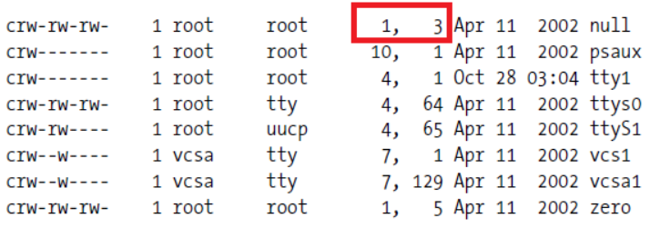
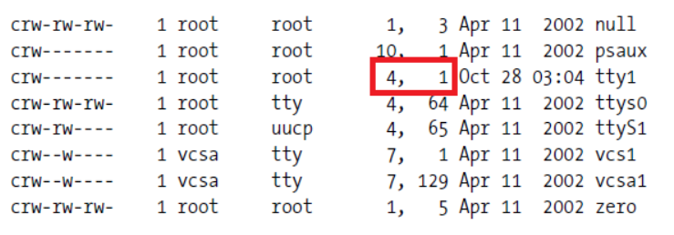
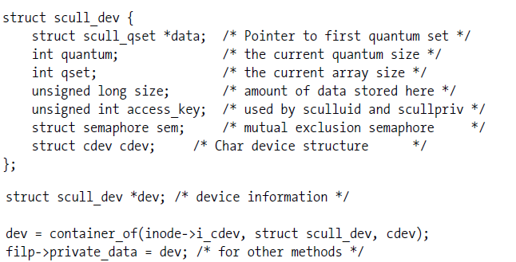

The listing below shows an ls -l output for the /dev directory. What do the two numbers highlighted in red illustrate? Select any answers which apply

The listing below shows an ls -l output for the /dev directory. What do the two numbers highlighted in red illustrate? Select any answers which apply

How should you allocate a major device number for a device driver you've created for a device? Select any possible options
When using dynamic device driver major numbers, how can you map your device number to the correct number matching your loaded driver?
Select the best description of the purpose of struct inode
Select the purpose of the character device registration function cdev_alloc.
Given the code below, select the true statements (select any which apply).

Every open() system call results in a open file method invocation on the associated driver
Every close() system call results in a release method invocation on an associated driver.
List the true statements about a Linux kernel driver pointer which uses the __user pointer qualifier.